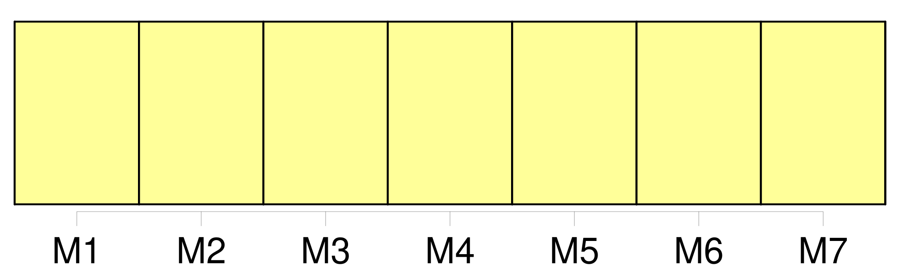
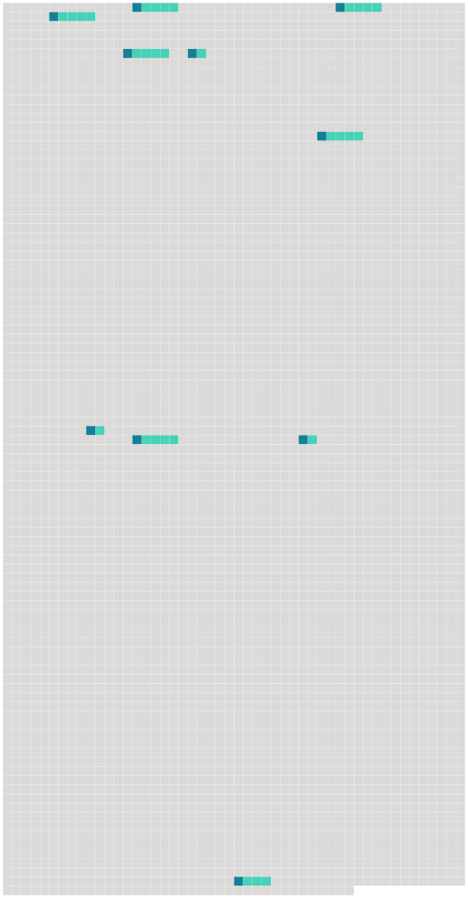

Longueur nb maillons : 10 mentions |
  |
La Commission établit son règlement intérieur, qui est adopté par un vote à [l'unanimité des parties contractantes] [1 phrases]
La Commission établit son règlement financier, qui est adopté par un vote à [l'unanimité des parties contractantes] [1 phrases]
La Commission peut, par un vote à [l'unanimité des parties contractantes] , décider d'admettre en qualité d'observateur : [11 phrases] Des décisions et des recommandations sont adoptées par un vote à [l'unanimité des parties contractantes]
Si [l'unanimité] ne peut se faire, et sauf disposition contraire de la convention, la Commission peut néanmoins adopter des décisions ou des recommandations par un vote à la majorité des trois quarts des parties contractantes. [22 phrases]
La Commission adopte l'amendement par un vote à [l'unanimité des parties contractantes] [52 phrases] Les parties contractantes peuvent à [l'unanimité] inviter des États ou des organisations régionales d'intégration économique non visés à l'article 25 à adhérer à la convention. Dans le cas d'une telle adhésion, la définition de la zone maritime est amendée, si nécessaire, par une décision adoptée par la Commission par un vote à [l'unanimité des parties contractantes]
Un tel amendement entre en vigueur, après avoir été approuvé à [l'unanimité] par toutes les parties contractantes, le trentième jour suivant la réception, par le gouvernement dépositaire, de la dernière notification à cet effet. [83 phrases] c ) À moins que, avant ou à l'échéance de cette période de quinze années, la Commission décide à [l'unanimité des voix] de ne pas maintenir l'exception prévue au point b ), elle prendra une décision sur la base de l'article 13 de la convention sur la prolongation de l'interdiction pour une période de dix ans à partir du 1er janvier 2008, après quoi une autre réunion de la Commission au niveau ministériel sera réunie. |
 |
La ressource peut être téléchargée sur la page Ortolang
Si vous avez des questions ou vous voyez des erreurs, merci d'envoyer un mail à silvia.federzoni89@gmail.com
Site développé par S. Federzoni (contact)